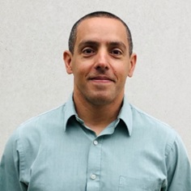

◎
Radiomics and Imaging AI
Explainable imaging phenotypes from CT, CMR, echo, and retinal imaging to quantify cardiometabolic disease burden and risk.
The Center for Cardiovascular Computational and Precision Health brings together clinicians, data scientists, engineers, and population health researchers to transform multimodal clinical data into actionable insights for prevention, diagnosis, and outcomes.
Explainable imaging phenotypes from CT, CMR, echo, and retinal imaging to quantify cardiometabolic disease burden and risk.
LLM-enabled phenotyping, longitudinal risk modeling, and clinical data infrastructure for scalable discovery.
High-resolution environmental, social, and neighborhood data to understand place-based cardiometabolic risk.
AI models using ECG and continuous physiologic signals to detect subclinical disease and predict outcomes.
Clinical decision support tools that identify high-risk patients and personalize prevention strategies.
Real-world evidence, comparative effectiveness, cost-effectiveness, and health equity analyses.
C3PH leverages a high-performance computational ecosystem designed for secure analysis of multimodal clinical data. The platform supports de-identification, data harmonization, model development, validation, and deployment workflows.
Data engineering: harmonized EHR, imaging, ECG, and geospatial datasets.
AI development: deep learning, foundation models, NLP, and multimodal transformers.
Clinical translation: decision support, prospective validation, and learning health system implementation.
C3PH Co-Director
C3PH Co-Director
Social Determinants of Health
Exposome and Geospatial Analytics
Radiomics and AI
Multimodal AI and EHR Analytics
Post-Doctoral Fellow
Clinical Research Fellow
Research Engineer
Data Scientist
Data Scientist
Post-Doctoral Fellow
Post-Doctoral Fellow
Post-Doctoral Fellow

Systems Architect
Systems Architect
Highlight landmark manuscripts, recent publications, preprints, and featured journal articles.
Showcase multimodal AI pipelines, imaging tools, exposome models, and deployed systems.
Present institutional partners, multicenter networks, and industry collaborations.
Provide datasets, software tools, protocols, and links for investigators and trainees.
C3PH launches a new digital home for research programs, collaborations, publications, and collaborative research opportunities.
Ongoing work integrates imaging, EHR, biosignals, and neighborhood-level exposures to improve cardiovascular prediction and prevention.
We welcome collaborations with clinicians, engineers, data scientists, trainees, health systems, community partners, and industry teams focused on computational and precision cardiovascular health.